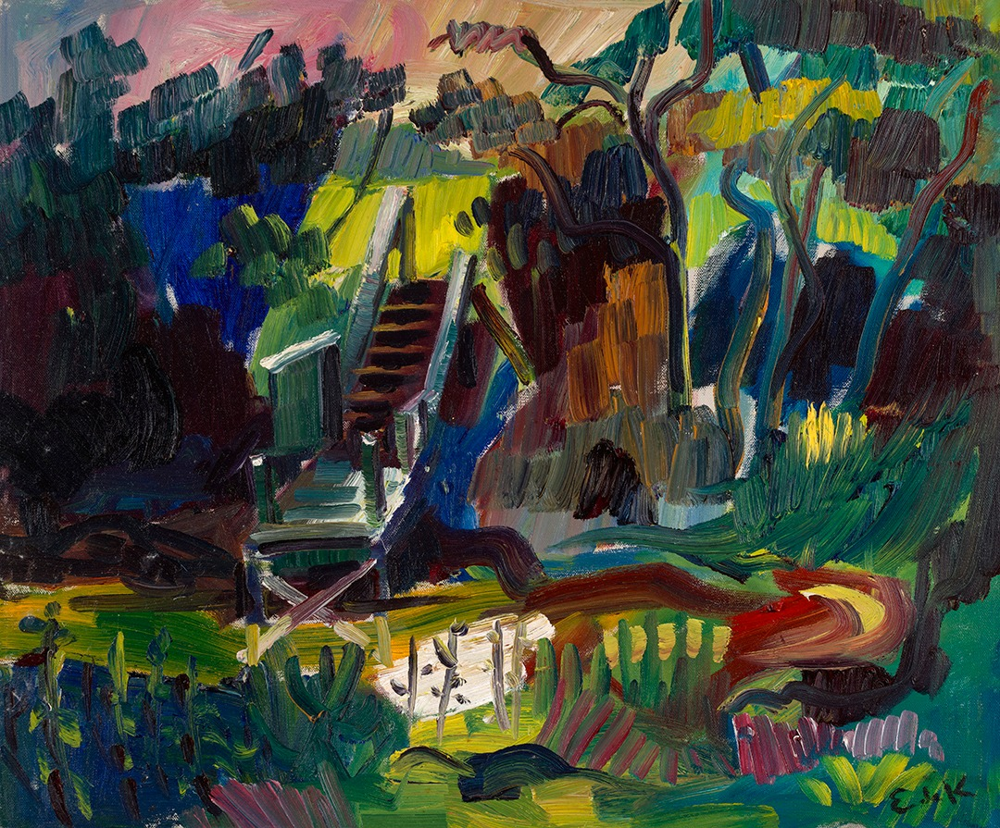

10 Jan
Closing date for submission of online applications for admission in September 2024
Wednesday, January 10 Closing date for submission of online applications for ad...
 Yale School of Art
Login
Yale School of Art
Login

about The Yale School of Art is a graduate school that confers MFAs in Graphic Design, Painting/Printmaking, Photography, and Sculpture; and offers undergraduate-level art courses to Yale College students. Our website exists as an ongoing collaborative experiment in digital publishing and information sharing . It functions as a wiki—all members of the School of Art community have the ability to add new, and edit most existing content.
2023 ADMISSIONS OPEN HOUSE VIDEOS ARE LIVE!

happening at SOA Spring 2024 Visiting Artist lectures are happening primarily in person, with some guests joining us online via Zoom. Attendance for in-person lectures is limited to current members of the School of Art community. This page serves as an archive of those lectures, as well as the select clips and segments that may be made available on the School of Art's YouTube channel in the coming months, in collaboration with each guest. Internal recordings of these lectures (with recording at the discretion of each guest) are made available to School of Art students, faculty, and staff via Dropbox.
community bulletin note
❝
The Yale Center for Environmental Justice is in the process of planning our fourth annual Global Environmental Justice Conference, with this year focusing on the theme of “Environmental Joy.” The conference aims to explore the ways in which environmental and climate justice and the communities engaged in that work generate joy. Guided by the notion that the ultimate goal of most environmental and climate work is to alleviate suffering and increase wellbeing, Environmental Joy will explore and celebrate the diverse ways that environmental justice achieves this goal. One facet of the conference programming we hope to organize is a juried art show soliciting works from artists around the world on the theme of Environmental Joy to be showcased in an exhibition during the conference. We are currently seeking any interested students or faculty who would be interested in supporting the planning and execution of this call for art. If you're interested in learning more about the opportunity, please contact Julia Simon at julia.simon@yale.edu.
❝
The Yale Arts Apprenticeship Program is an initiative that connects Yale undergraduates, particularly those on financial aid, with professional arts practitioners of any discipline. As an option within Yale's Summer Experience Award (SEA) funding model, the Arts Apprenticeship must fulfill the same basic requirements. Additional details, as well as those specific to the Arts Apprenticeship are included below. Yale faculty, alumni, or other arts practitioners interested in featuring positions through the program should contact Yale's Creative Careers advisor. Which Opportunities are Eligible? Must be at least 30 hours/week, for at least 8-weeks over the summer months. Those 8-weeks do not have to be continuous if the mentoring Arts Practitioner agrees on a different schedule. The time commitment need not all be in direct contact with the Arts Practitioner. Independent projects, tasks, research, etc. can comprise much of the experience, as long as the Arts Practitioner is checking in regularly with the student to provide oversight and career-based context. The opportunity cannot be with a for-profit organization. The engagement for an Arts Apprenticeship should be directly with an individual Arts Practitioner and not with a company. The only exception to this would be if the company overseeing the apprenticeship were a registered non-profit organization. For more information: https://ocs.yale.edu/channels/arts-apprenticeship/ To post a job, contact: https://ocs.yale.edu/staff-list/#derek-i-webster
❝
Hey everyone! I've been mapping public art in New Haven as part of my nonprofit project ArtAround and I'd love to invite you to join me, or just check it out and see what you think.
❝
Hey everyone! I've been mapping public art in New Haven as part of my nonprofit project ArtAround and I'd love to invite you to join me, or just check it out and see what you think.

art + design = ❤️
10 Jan
Closing date for submission of online applications for admission in September 2024
Wednesday, January 10 Closing date for submission of online applications for ad...
11 Jan
Registration for all students
Thursday, January 11 Registration for all students for the Spring 2024 semester.
15 Jan
Martin Luther King, Jr. Day; Offices closed
Monday, January 15 Martin Luther King, Jr. Day; Offices closed.
16 Jan
Spring-term classes begin
Tuesday, January 16 Spring-term classes begin, 8:20 a.m.
17 Jan
Rhino 3D Essentials Workshop with Paloma Izquierdo '23
Wednesday, January 1710:00AM - 12:30PMCCAM Leeds Studio (149 York St)Attendance ...
17 Jan
ELO reopens after winter recess
The ELO will close Friday, December 15 at 4PM and reopen Wednesday, January 17 a...